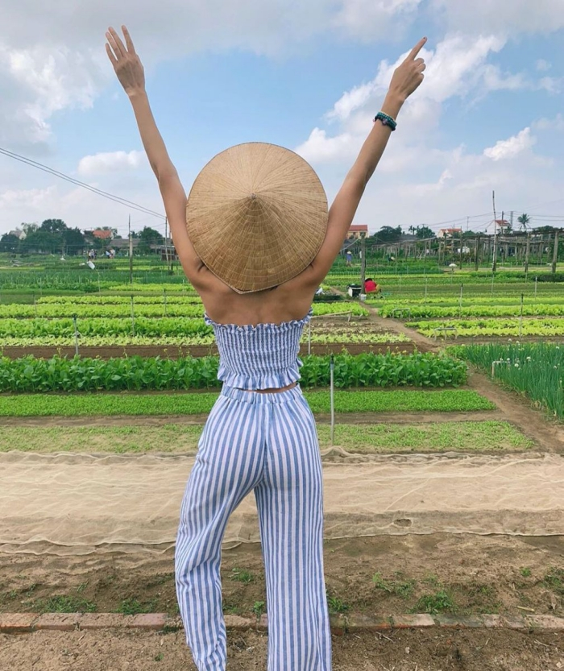
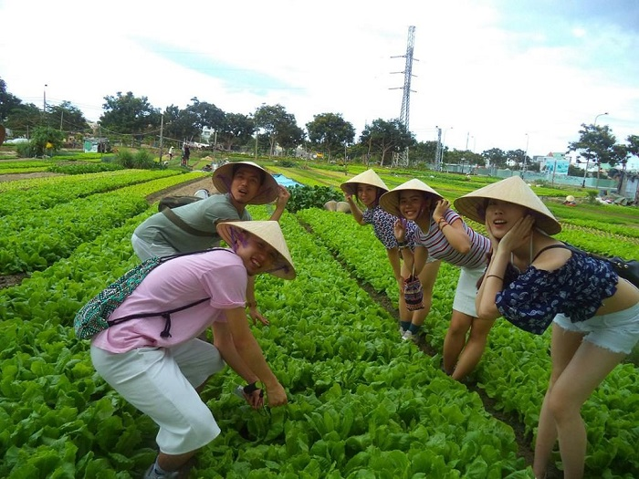

Hồ Phú Ninh
Nơi hoà mình với thiên nhiên cùng các hoạt động vui chơi ngoài trời.

Làng Rau Trà Quế - Hội An
Nơi giúp bạn hoà nhập cuộc sống thường ngày của một người nông dân

Làng Gốm Thanh Hà - Hội An
Tham gia vào chế tác các sản phẩm gốm theo sở thích của bản thân.
I. Giới thiệu sơ lược về làng rau Trà Quế Hội An
Làng rau Trà Quế thuộc xã Cẩm Hà, Thành phố Hội An cách trung tâm Hội An khoảng 3km về hướng Tây Bắc với diện tích trên 40ha được các hộ dân ở đây luân canh, xen canh hơn 20 loại rau ăn lá và rau gia vị với truyền thống gần 300 năm. Nơi đây nổi tiếng với các sản phẩm rau xanh được trồng trên vùng đất màu mỡ giữa đầm Trà Quế và sông Đế Võng. Ngoài ra người dân nơi đây còn dùng rong lấy từ sông Cổ Cò bón cho rau kết hợp cùng các kỹ thuật tiên tiến nên các loại rau ở Trà Quế luôn tươi tốt và mang một hương vị đặc trưng riêng mà không nơi nào có được. Cũng nhờ phương pháp đó mà nghề trồng rau ở đây cho ra thành phẩm rau siêu sạch bởi quy trình khép kín và đặc biệt không làm ảnh hưởng đến môi trường, mang lại sức khỏe cho người tiêu dùng. Không chỉ đơn thuần là nơi sản xuất rau sạch, Trà Quế còn là điểm đến lý tưởng cho các du khách yêu thích sự tươi mát và thanh bình của làng rau đồng thời thưởng thức các món ăn ngon đặc trưng được chế biến bởi nguồn rau ngay tại vườn.
Check-in Hội An - Làng rau Trà Quế (Nguồn: Sưu tầm)
Giá vé vào làng rau Trà Quế Hội An chỉ 10.000 VNĐ/ người/ ngày, quá rẻ cho một chuyến trải nghiệm vô cùng thú vị đã bao gồm tham quan và tham gia các hoạt động tại đây. Ngoài ra bạn có thể book tour để được giới thiệu rõ hơn về lịch sử, văn hóa cũng như đời sống và công việc làm nông của người dân Trà Quế.
II. Những trải nghiệm thú vị tại làng rau Trà Quế
II.1. Một ngày làm cư dân làng rau
Tham quan làng rau Trà Quế - Một trong những địa điểm du lịch Hội An thú vị, bạn đừng bỏ qua cơ hội trải nghiệm công việc của một nông dân đích thực. Bạn sẽ được người dân bản địa hướng dẫn từ A-Z và được giới thiệu tỉ mỉ cách xới đất, gieo hạt, tưới cây và thu hoạch rau. Mặc dù có chút thấm mệt nhưng đảm bảo sau khi kết thúc công việc, bạn sẽ hiểu thêm về cuộc sống của một người làm nông cũng như cảm nhận được sự dung dị nơi làng quê thôn xóm.
Trải nghiệm một ngày làm nông là hoạt động ý nghĩa khi đến đây (Nguồn: Sưu tầm)
III.3. Tham gia lớp học nấu ăn ở làng rau Trà Quế
Đây cũng là một trong những hoạt động thú vị khi du lịch làng rau Trà Quế Hội An. Bạn sẽ được các đầu bếp hướng dẫn cách lựa chọn nguyên liệu và chế biến những món ăn đặc sản của Hội An như bánh xèo, mì Quảng và có thể trực tiếp thưởng thức chúng sau khi làm xong.